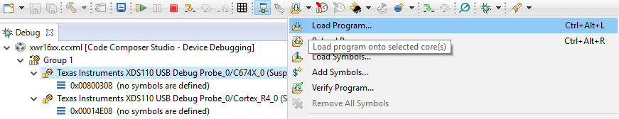
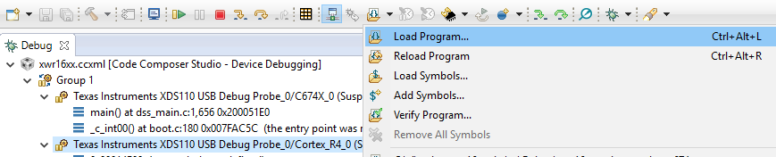
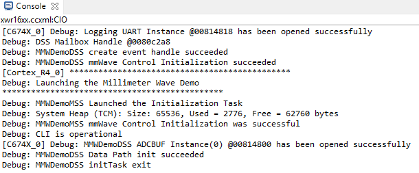
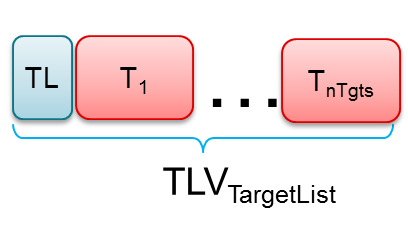

Overview
===========
This lab demonstrates the use of TI mmWave sensors to count and track multiple people simultaneously.
Detection and tracking algorithms run onboard the IWR1642 mmWave sensor and are used to localize people and track their movement with a high degree of accuracy.
mmWave sensors can reduce false detections from challenging environments such as direct sunlight, no-light, fog, or smoke, and are particularly suited for privacy-conscious applications.
In this demonstration, localization and tracking is performed upon any moving object in the scene; static objects such as chairs, tables, and walls are ignored.
The IWR1642 device outputs a data stream consisting of point cloud information and a list of tracked objects which can be visualized using the software included in this lab.
Quickstart
===========
Quickstart folder can be found at `C:\ti\<mmwave_industrial_toolbox_install_dir>\labs\lab0011-pplcount\lab0011-pplcount-quickstart`.
The quickstart contains:
* Precompiled binaries for flashing the device using Uniflash
* Visualizer as .exe
1. Hardware and Software Requirements
-----------
### Hardware
Item | Details
--------------------------|-----------------
Device | [xWR1642 EVM](http://www.ti.com/tool/IWR1642BOOST)
Mounting Hardware | The EVM needs to be mounted at a height of ~1.5-2.5m with a slight downtilt. An [adjustable clamp style smartphone adapter mount for tripods](https://www.amazon.com/Vastar-Universal-Smartphone-Horizontal-Adjustable/dp/B01L3B5PBI/) and a [60-75" tripod](https://www.amazon.com/Neewer-Portable-centimeters-Camcorder-kilograms/dp/B01N6JCW8F/) can be used to clamp and elevate the EVM. This is only an example solution for mounting; other methods can be used so far as setup specifications are met.
Computer | PC with Windows 7 or 10. If a laptop is used, please use the 'High Performance' power plan in Windows.
Micro USB Cable | Due to the high mounting height of the EVM, an 8ft+ cable or USB extension cable is recommended.
Power Supply | 5V, >2.5A with 2.1-mm barrel jack (center positive). The power supply can be wall adapter style or a battery pack with a USB to barrel jack cable.
Tape Measure |
### Software
Tool | Version | Required For |Details
----------------------------|---------------------------|---------------|--
mmWave Industrial Toolbox | 2.0.1+ | - | Contains all files (quickstart, visualizer and firmware source files) related to mmWave People Counting Lab
MATLAB Runtime | 2017a (9.2) | Quickstart Visualizer | To run the quickstart visualizer the [runtime](https://www.mathworks.com/products/compiler/matlab-runtime.html) is sufficient.
Uniflash | Latest | Quickstart Firmware | [Download offline tool](http://www.ti.com/tool/UNIFLASH) or use [cloud version](https://dev.ti.com/uniflash/#!/)
[[+d Expand for mmWave Industrial Toolbox installation without Code Composer Studio
1. Navigate to the [TI Resource Explorer](http://dev.ti.com/tirex/#/?link=Software%2FmmWave%20Sensors%2FIndustrial%20Toolbox)
2. Click the download button. A .zip file will be downloaded.
<img src="images/industrial_toolbox_download.png" width="400"/>
3. Navigate to the .zip file. Right click and then select **Extract All...**. Do NOT use the default path. The path must be `C:\ti`.
<img src="images/extract.png" width="400"/>
4. Verify installation by navigating to view the People Counting lab files at `C:\ti\<mmwave_industrial_toolbox_install_dir>\labs\lab0011-pplcount`
+]]
[[+d Expand for mmWave Industrial Toolbox installation using Code Composer Studio
1. Open CCS
2. In the top toolbar, navigate to **View > Resource Explorer**
3. In the **Resource Explorer** side panel (not the main panel with "Welcome to.."), navigate to Industrial Toolbox at **Software > mmWave Sensors > Industrial Toolbox - <ver>**
4. With Industrial Toolbox selected, the main panel should show the Industrial toolbox landing page. Click on the **Download icon** in the right corner of panel.
<img src="images/industrial_toolbox_download.png" width="400"/>
5. Verify installation by navigating to view the People Counting lab files at `C:\ti\<mmwave_industrial_toolbox_install_dir>\labs\lab0011-pplcount`
* +]]
2. Physical Setup
-----------
For best results, the EVM should be positioned high enough to be above the top of tracked objects and with a slight down tilt.
The aim is to position the EVM so that the antenna beam can encompass the area of interest.
If the down tilt is too severe, noise from ground clutter would increase and the effective sensing area would decrease.
If threre is no down tilt, counting performance would be worse for cases in which one person is in line with and shielded by another person.
Given the antenna radiation pattern of the EVM, consideration should be taken to not mount the EVM too close or oriented with beam directed to the ceiling as this can increase the noise floor and result in less optimal performance.
**Setup Requirements:**
* Elevate EVM: 1.5-2.5m high
* Down tilt: ~10 degree
**Setup using suggested tripod and smartphone clamp mount:**
1. Screw on clamp mount to tripod
2. Clamp EVM across its width below power barrel jack to attach EVM
3. Adjust tripod head for ~10 degree down tilt (Tip: Bubble or level smartphone apps can be used to measure down tilt)
4. Plug in micro-usb and power supply to EVM
5. Extend tripod so that the EVM is elevated 1.5-2.5m from the ground
6. Position EVM and tripod assembly in desired location of room. The EVM should be positioned so that the 120 degree FOV of the EVM antenna encompasses the area of interest and points to the region in which people are expected to enter the space.
3. Flash the EVM
-----------
* Power on the EVM using a 5V/2.5A power supply.
* Flash the following image using **Uniflash**
Image | Location
--------------------------|------------
Meta Image 1/RadarSS | `C:\ti\<mmwave_industrial_toolbox_install_dir>\labs\lab0011-pplcount\lab0011-pplcount-quickstart\xwr16xx_pcount_lab.bin`
[[+d Expand for help using Uniflash
* Connect the EVM to your PC and check the COM ports in **Windows Device Manager**
* The EVM exports two virtual COM ports as shown below:
* XDS110 Class Application/User UART (COM UART): Used for passing configuration data and firmware to the EVM
* XDS110 Class Auxiliary Data Port (COM AUX): Used to send processed radar data output
<img src="images/com_port.png" width="300"/>
{{b Note the COM UART and COM AUX port numbers, as they will be used later for flashing and running the lab.}}
* Put the EVM in flashing mode by connecting jumpers on **SOP0** and **SOP2** as shown in the image. Then power cycle the EVM with **SW2**.
<img src="images/flash_jumpers.png" width="300"/>
* Open the **UniFlash tool** ([Download offline tool](http://www.ti.com/tool/UNIFLASH) or use [cloud version](https://dev.ti.com/uniflash/#!/) )
* In the New Configuration section, locate and select the appropriate device (AWR1642 or IWR1642)
* Click Start to proceed
* Click the **Settings & Utilities** tab. Under setup, fill the **COM Port** text box with the Application/User UART COM port number (COM UART) noted earlier.
* In the **Program** tab, browse and locate the images (.bin file) as specified in the lab directions.
* **Power cycle** the device and click on **Load Images**
[[g! Successful Flash Procedure
UniFlash’s console should indicate: [SUCCESS] Program Load completed successfully
]]
* Power off the board and **remove only SOP2 jumper**
[[y SOP2 Removed?
Ensure that the jumper has been removed and the EVM power cycled. This puts the board back in functional mode.
]]
+]]
4. Run the Lab
-----------
To run the lab, launch and configure the visualizer which displays the detection and tracked object data received via UART.
### 1. Launch the visualizer:
* Navigate to `C:\ti\<mmwave_industrial_toolbox_install_dir>\labs\lab0011-pplcount\lab0011-pplcount-quickstart\pplcount_demo_gui.exe`
* Run `pplcount_demo_gui_<version>.exe`
* A black console log window will appear.
* After 30-60sec, the **mmWave People Counting Visualizer Setup** window should appear
### 2. Configure Visualizer
-----------
On the left side of the visualizer setup window are options and parameters for running the demo. On the right side are graphics to aid in understanding the configuration options.
The plot titled **Top View of Scene** updates if **Chirp Configuration** or **EVM and Room Orientation** are changed. This plot illustrates how the visualizer thinks the radar is setup in a scene.
The approximate field of view and range of the radar is depicted by the red outline. The thicker black rectangle shape represents the defined visualization area. Typically, if the demo is setup in an indoor environment,
the visualization area should be defined to match the dimensions of the room.
The following sections will step through the setup requirements to run the people counting demo:
#### 1. Select COM Ports
* Specify **UART** and **DATA** COM ports using the drop down menus. Click **Connect** to open and connect to ports.
[[g! COM Status
Message should update to show that the COM ports have been connected before continuing.
]]
#### 2. Chirp Configuration
* A custom chirp configuration can be loaded or leave the default chirp developed for people counting selected.
* To load a custom config: select **Select file** option and then click **Browse Files** button and choose desired '.cfg' file. The **Top Down View of Scene** plot will update the depiction of the radar range depending on the chirp loaded.
* The default chirp was developed for people counting in indoor environments with a max range of approximately 6m.
[[+d Expand for details of default chirp:
Chirp Parameter (Units) | Location
-------------------------|------------
Start Frequency (GHz) | 77
Slope (MHz/us) | 60
Samples per chirp | 128
Chirps per frame | 256
Frame duration (ms) | 50
Sampling rate (Msps) | 2.5000
Bandwidth (GHz) | 3.0720
Range resolution (m) | 0.0488
Max Unambiguous Range (m)| 5
Max Radial Velocity (m/s)| 5.2936
Velocity resolution (m/s)| 0.0827
Azimuth resolution (deg) | 14.5
Number of Rx | 4
Number of Tx | 2
+]]
#### 3. EVM and Room Orientation
* **Boundary Parameters A-D**: relate to the defined visualization area. They are measured from the perspective of and relative to the EVM. The EVM is always the origin.
* Stated another way, changing A-D effectively zooms the plot in and out about the EVM origin. Changes to A-D are updated in **Top Down
View of Scene** plot.
* The default, pre-populated parameters correlate to plotting the radar's max FOV and the max range with the default chirp. They can be left as is if observing the maximum area of detection is desired.
* If it is instead desired to define the visualization area to match the dimensions of the room then the parameters need to be modified.
* To get a sense of the orientation directions, picture standing at the location the EVM is mounted and face straight ahead to the wall in front of you. The wall to your right is the right boundary. The distance from you (the EVM) to the right wall in meters is the value for parameter A). The same follows for the left, back, and front boundaries.
* **Azimuth Angle Parameter E**: azimuth tilt angle. If the EVM is not positioned facing straight ahead to the front boundary then it has an azimuth tilt angle. Specify the angle in degrees and view the change in the **Top Down View of Scene** plot. The red outline defining the sensor area will tilt either towards the left or right boundary.
* This parameter is signed. If the EVM is tilted towards the right wall, include the + sign. For the left wall include the - sign. If EVM is oriented straight ahead the angle is 0 and the sign can be either. The figure below details the sign convention.
* OPTIONAL: Webcam for Ground Truth
* If desired, an external webcam that is installed on the PC can be opened using the visualizer.
* Use the drop down menu to select desired webcam and then click **Enable Webcam**.
* The webcam stream will be displayed in another figure when setup is complete.
* NOTE: Enabling the webcam can cause lag if the PC does not have a dedicated graphics card
* OPTIONAL: Define Subzones for Counting
* Rectangular areas can be defined to specify specific regions for which to keep another count of the number of people present.
* For example, if two boxes are defined then the visualizer will report a total people count for all the people in the scene it detects, a Box 1 count, and a Box 2 count.
* **Launch Visualizer**
* Click **Start** to launch visualizer with configurations specified.
6. Understanding the Output
-----------
The visualizer consists of:
* A top panel with a **Point Cloud** plot.
* The black points represent the point cloud returned by the detection layer of the device.
* Each new tracked object is assigned one of five possible colors (blue, red, green, cyan, and magenta).
* The small colored ring represents the computed centroid of the point cloud for the tracked object.
* The "snail trail" trace represent 100 frames of history of the tracked object's centroid.
* A bottom panel with a **Gating and Association** plot.
* This plot visualizes the result of the tracking algorithm.
* The colored points represent the detection points (black points in previous frame's Point Cloud plot) which are associated to a specific track. Unassociated points that do not belong to a track are not plotted.
* The colored circular ring is centered over the centroid of of the tracked object. The diameter of the ring is related to the variance in location of the tracked object's detection points.
* A side panel with three tabs: Statistics, Chirp Configuration, and Visualizer Options
* TIP: If lag is an issue, check the **Consolidate plotting** option in **Visualizer Options**. This will only display one of the two plots.
t
**Quitting the Visualizer** :
To exit the visualizer use the exit button at the bottom left of the window. This will delete the open serial ports and save an output file of the session in fhist.mat.
Developer's Guide
===========
Build the Firmware from Source Code
-----------
### 1. Software Requirements
Tool | Version | Required For |Details
----------------------------|---------------------------|---------------|--
mmWave Industrial Toolbox | 2.2.0+ | - | Contains all files (quickstart, visualizer and firmware source files) related to mmWave People Counting Lab
TI mmWave SDK | 1.02.00.05+ | Firmware Source Code | The latest [TI mmWave SDK](http://software-dl.ti.com/ra-processors/esd/MMWAVE-SDK/latest/index_FDS.html) and all the related tools are required to be installed as specified in the mmWave SDK release notes
Code Composer Studio | 7.4+ | Firmware Source Code | [Download link](http://processors.wiki.ti.com/index.php/Download_CCS#Code_Composer_Studio_Version_7_Downloads) Note: CCSv6.x cannot be used
C6000 Code Generation Tool| 7.4.16 | Firmware Source Code | To compile code for the DSP core(C674x), the version 7.4.16 compiler must be installed under C:\ti. [Download link](http://software-dl.ti.com/dsps/forms/self_cert_export.html?prod_no=ti_cgt_c6000_7.4.16_windows_installer.exe&ref_url=http://software-dl.ti.com/codegen/esd/cgt_registered_sw/C6000/7.4.16PC)
To verify proper installations, navigate to **`C:\ti`** and ensure that the following tools have been installed in the *EXACT* directory specified.
Tool | Version | Folder Path | Download link & Details
----------------|-------------|----------------------------------|----------------
CCS | 7.4 or later| `C:\ti\ccsv7` | [Download link](http://processors.wiki.ti.com/index.php/Download_CCS#Code_Composer_Studio_Version_7_Downloads) Note: CCSv6.x cannot be used
TI SYS/BIOS | 6.53.02.00 | `C:\ti\bios_6_53_02_00` | Included in mmwave sdk installer
TI ARM compiler | 16.9.6.LTS | `C:\ti\ti-cgt-arm_16.9.6.LTS` | Included in mmwave sdk installer
TI CGT compiler | 7.4.16 | `C:\ti\c6000_7.4.16` | Version 7.4.16 must be downloaded and installed. [Download link](http://software-dl.ti.com/dsps/forms/self_cert_export.html?prod_no=ti_cgt_c6000_7.4.16_windows_installer.exe&ref_url=http://software-dl.ti.com/codegen/esd/cgt_registered_sw/C6000/7.4.16PC)
XDC | 3.50.04.43 | `C:\ti\xdctools_3_50_04_43_core` | Included in mmwave sdk installer
C64x+ DSPLIB | 3.4.0.0 | `C:\ti\dsplib_c64Px_3_4_0_0` | Included in mmwave sdk installer
C674x DSPLIB | 3.4.0.0 | `C:\ti\dsplib_c674x_3_4_0_0` | Included in mmwave sdk installer
C674x MATHLIB | 3.1.2.1 | `C:\ti\mathlib_c674x_3_1_2_1` | Included in mmwave sdk installer
mmWave device support packages | 1.5.5 or later | - | Upgrade to the latest using CCS update process (see SDK user guide for more details)
TI Emulators package | 6.0.0576.0 or later | - | Upgrade to the latest using CCS update process (see SDK user guide for more details)
### 2. Import Lab Project
For the People Counting lab, there are two projects, the DSS for the C674x DSP core and the MSS project for the R4F core, that need to be imported to CCS and compiled to generate firmware for the xWR1642.
* Start CCS and setup workspace as desired.
* Import the projects below to CCS using either TI Resource Explorer in CCS or CCS Import Projectspecs method:
* **pplcount_16xx_dss**
* **pplcount_16xx_mss**
[[+d Expand for details on importing via TI Resource Explorer in CCS
* In the top toolbar, navigate to **View > Resource Explorer**
* In the **Resource Explorer** side panel (not the main panel with "Welcome to.."), navigate to **Software > mmWave Sensors > Industrial Toolbox - <ver> > Labs > People Counting Demo**
* Under the expanded **People Counting Demo** folder, there should be two CCS projects, **CCS Project - DSS** and **CCS Project - MSS**.
* For each of the two projects: Click on the project, which should open the project in the right main panel, and then click on the Import to IDE button .
+]]
[[+d Expand for details on importing via CCS Import Projectspecs
* In the top toolbar, navigate to **Project > Import CCS Projects...**
* With the **Select search-directory** option enabled, click **Browse...**, navigate to the **lab0011-pplcount** folder at `C:\ti\<mmwave_industrial_toolbox_install_dir>\labs\lab0011-pplcount`, and then click **OK**.
* Under **Discovered projects**, select **pplcount_16xx_dss** and **pplcount_16xx_mss** (ignore any other projects), then click **Finish**.
+]]
[[g! Successful Import to IDE
After using either method, both project should be visible in **CCS Project Explorer**
]]
[[b! Project Workspace
When importing projects to a workspace, a copy is created in the workspace. All modifications will only be implemented for the workspace copy. The original project downloaded in mmWave Industrial Toolbox is not touched.
]]
### 3. Build the Lab
#### **Build DSS Project**
The DSS project must be built before the MSS project.
{{y The DSS project must be built using compiler version 7.4.16.
To check the build settings, select **pplcount_16xx_dss** and right click on the project to select **Show build settings...**.
Under the **General** tab, the **Advanced Settings** section has a drop down menu for **Compiler Version**.
Ensure that it reads **TI v7.4.16**.}}
With the **pplcount_16xx_dss** project selected in **Project Explorer**, right click on the project and select **Rebuild Project**. Selecting **Rebuild** instead of **Build** ensures that the project is always re-compiled. This is especially important in case the previous build failed with errors.
[[g! Successful DSS Project Build
In the **Project Explorer** panel, navigate to and expand **pplcount_16xx_dss > Debug** directory. The project has been successfully built if the following files appear in the **Debug** folder:
* xwr16xx_pplcount_dss.bin
* xwr16xx_pplcount_dss.xe674
]]
#### **Build MSS Project**
After the DSS project is successfully built, select **pplcount_16xx_mss** in **Project Explorer**, right click on the project and select **Rebuild Project**.
[[g! Successful MSS Project Build
In the **Project Explorer** panel, navigate to and expand **pplcount_16xx_mss > Debug** directory. The project has been successfully built if the following files appear in the **Debug** folder:
* xwr16xx_pplcount_mss.bin
* xwr16xx_pplcount_mss.xer4f
* xwr16xx_pplcount_lab.bin
]]
[[r! Build Fails with Errors
If the build fails with errors, please ensure that all the [prerequisites](#software) are installed as mentioned in the mmWave SDK release notes.
]]
### 4. Execute the Lab
There are two ways to execute the compiled code on the EVM:
* Deployment mode: the EVM boots autonomously from flash and starts running the bin image
* Using Uniflash, flash the **xwr16xx_pplcount_lab.bin** found at `<PROJECT_WORKSPACE_DIR>\pplcount_16xx_mss\Debug\xwr16xx_pplcount_lab.bin`
* The same procedure for flashing can be use as detailed in the Quickstart [Flash the Device](#1-flash-the-device) section.
* Debug mode: enables connection with CCS while lab is running; useful during development and debugging
[[+d Expand for help with Debug mode:
The CCS debug firmware (provided with the mmWave SDK) needs to be flashed once on the EVM.
* CCS Debug method is enabled by flashing the CCS Debug Firmware (provided with the mmWave SDK) using the methods covered in the Quickstart [Flash the Device](#1-flash-the-device) section.
* Use the following image instead
Image | Location | Comment
--------------------------|----------------------------|------------------------
Meta Image 1/RadarSS | `C:\ti\mmwave_sdk_<ver>\packages\ti\utils\ccsdebug\xwr16xx_ccsdebug.bin` | Provided with the mmWave SDK
After the CCS debug firmware has been flashed, connect the EVM to CCS
* Create a target configuration (skip to "Open the target..." if config already created previously in another lab for xwr16xx)
* Go to **File > New > New Target Configuration File**
* Specify an appropriate file name (ex: IWR16xx.ccxml) and check "**Use shared location**". Click **Finish**.
* In the configuration editor window:
* Select **Texas Instruments XDS110 USB Debug Probe** for Connection
* Select **AWR1642** or **IWR1642** device as appropriate in the Board or Device text box.
* Press the **Save** button to save the target configuration.
* [Optional]: Press the **Test Connection** button to check the connection with the board.
* Open the target configuration window by going to **View > Target Configurations**.
* Under **User Defined** configurations the target configuration previously created should appear.
* Right click on the target configuration and select **Launch Select Configuration**. The target configuration will launch in the **Debug Window**.
<img src="images/target_config.png" width="350"/>
* Group cores and connect
* Select both the **Texas Instruments XDS110 USB Debug probe/C674X_0** and **Texas Instruments XDS110 USB Debug probe/Cortex_R4_0** and then right click and select **Group core(s)**
<img src="images/ccsdebug_groupcores.png" width="350"/>
* Select **Group 1** and then right click and select **Connect Target**
<img src="images/connect_target_2.png" width="350"/>
* Load the binary
* Once both targets are connected, click on the C674X_0 target and then click **Load** button in the toolbar. <img src="images/load_program_icon.png" width="40"/>

* In the **Load Program** dialog, press the **Browse Project** button .
* Select **xwr16xx_pplcount_dss.xe674** found at `<PROJECT_WORKSPACE_DIR>\pplcount_16xx_dss\Debug\xwr16xx_pplcount_dss.xe674` and press **Ok**.
* Press **Ok** again in the **Load Program** dialog.
* Repeat the above Load the Binary process for the Cortex_R4_0 target, selecting instead **xwr16xx_pplcount_mss.xer4f** found at `<PROJECT_WORKSPACE_DIR>\pplcount_16xx_mss\Debug\xwr16xx_pplcount_mss.xer4f`

* Run the binary
* Select **Group 1**, press the **Run/Resume** button <img src="images/run_resume_icon.png" width="30"/>
* The program should start executing and generate console output as shown.

[[g! Successful Run Binary
If binary is running correctly, the Console will include the “CLI is operational” message which indicates that the program is ready and waiting for the sensor configuration.
]]
+]]
After executing the lab using either method, the lab can be visualized using the [Quick Start GUI](#2-run-the-lab-visualizer) or continue to working with the [GUI Source Code](#getting-started-with-gui-source-files)
Visualizer Source Code
-----------
{{y Working with and running the Visualizer source files requires a MATLAB License not just the MATLAB Runtime Engine}}
The detection processing chain and group tracking algorithm are implemented in the firmware. The visualizer serves to read the UART stream from the device and then plot the detected points and tracked objects.
Source files are located at `C:\ti\mmwave_industrial_toolbox_<VER>\labs\lab0011-pplcount\lab0011-pplcount`.
* **main_pplcount_viz.m**: the main program which reads and parses the UART data for visualization
* **setup.m**, **setup.fig**: creates the visualizer configuration window used in GUI setup mode where user can input setup parameters
* **mmw_pplcount_demo_default.cfg**: configuration file c
Data Formats
-----------
A TLV(type-length-value) encoding scheme is used with little endian byte order. For every frame, a packet is sent consisting of a fixed sized **Frame Header** and then a variable number of TLVs depending on what was detected in that scene. The TLVs can be of types representing the 2D point cloud, target list object, and associated points.
<img src="images/packet_structure.png" width="600"/>
### Frame Header
Size: 52 bytes
```Matlab
frameHeaderStructType = struct(...
'sync', {'uint64', 8}, ... % syncPattern in hex is: '02 01 04 03 06 05 08 07'
'version', {'uint32', 4}, ... % 0xA1642 or 0xA1443
'platform', {'uint32', 4}, ... % See description below
'timestamp', {'uint32', 4}, ... % 600MHz free running clocks
'packetLength', {'uint32', 4}, ... % In bytes, including header
'frameNumber', {'uint32', 4}, ... % Starting from 1
'subframeNumber', {'uint32', 4}, ...
'chirpMargin', {'uint32', 4}, ... % Chirp Processing margin, in ms
'frameMargin', {'uint32', 4}, ... % Frame Processing margin, in ms
'uartSentTime' , {'uint32', 4}, ... % Time spent to send data, in ms
'trackProcessTime', {'uint32', 4}, ... % Tracking Processing time, in ms
'numTLVs' , {'uint16', 2}, ... % Number of TLVs in thins frame
'checksum', {'uint16', 2}); % Header checksum
```**Frame Header Structure in MATLAB syntax for name, type, length**
```Matlab
% Input: frameheader is a 52x1 double array, each index represents a byte of the frame header
% Output: CS is checksum indicator. If CS is 0, checksum is valid.
function CS = validateChecksum(frameheader)
h = typecast(uint8(header),'uint16');
a = uint32(sum(h));
b = uint16(sum(typecast(a,'uint16')));
CS = uint16(bitcmp(b));
end
```**validateChecksum(frameheader) in MATLAB syntax**
### TLVs
The TLVs can be of type **POINT_CLOUD_2D**, **TARGET_LIST_2D**, or **TARGET_INDEX**.
#### **TLV Header**
Size: 8 bytes
```Matlab
% TLV Type: 06 = Point cloud, 07 = Target object list, 08 = Target index
tlvHeaderStruct = struct(...
'type', {'uint32', 4}, ... % TLV object
'length', {'uint32', 4}); % TLV object Length, in bytes, including TLV header
```**TLV header in MATLAB syntax**
Following the header, is the the TLV-type specific payload
#### **Point Cloud TLV**
Type: POINT_CLOUD_2D
Size: sizeof (tlvHeaderStruct) + sizeof (pointStruct2D) x numberOfPoints
Each Point Cloud TLV consists of an array of points. Each point is defined in 16 bytes.
```java
pointStruct2D = struct(...
'range', {'float', 4}, ... % Range, in m
‘azimuth', {'float', 4}, ... % Angle, in rad
'doppler', {'float', 4}, ... % Doppler, in m/s
'snr', {'float', 4}); % SNR, ratio
```**Point Structure in MATLAB syntax**
#### **Target Object TLV**
Type: TARGET_LIST_2D
Size: sizeof (tlvHeaderStruct) + sizeof (targetStruct2D) x numberOfTargets

Each Target List TLV consists of an array of targets. Each target is defined in 68 bytes.
```java
targetStruct2D = struct(...
'tid', {'uint32', 4}, ... % Track ID
'posX', {'float', 4}, ... % Target position in X dimension, m
'posY', {'float', 4}, ... % Target position in Y dimension, m
'velX', {'float', 4}, ... % Target velocity in X dimension, m/s
'velY', {'float', 4}, ... % Target velocity in Y dimension, m/s
'accX', {'float', 4}, ... % Target acceleration in X dimension, m/s2
'accY', {'float', 4}, ... % Target acceleration in Y dimension, m/s
'EC', {'float', 9*4}, ... % Error covariance matrix, [3x3], in range/angle/doppler coordinates
'G', {'float', 4}); % Gating function gain
```**Target Structure in MATLAB syntax**
#### **Target Index TLV**
Type: TARGET_INDEX
Size: sizeof (tlvHeaderStruct) + numberOfPoints (NOTE: here the number of points are for frame n-1)
Each Target List TLV consists of an array of target IDs. A targetID at index ***i*** is the target to which point ***i*** of the previous frame's point cloud was associated.
Valid IDs range from 0-249.
```java
targetIndex = struct(...
'targetID', {'uint8', 1}); % Track ID
```**Target ID Structure in MATLAB syntax**
Other Target ID values:
Value | Meaning
------------|-----------
253 | Point not associated, SNR too weak
254 | Point not associated, located outside boundary of interest
255 | Point not associated, considered as noise
#### Example Parsing
Example UART stream with annotation of Frame Header and TLVs.
Customization
-----------
* Please refer to the **People Counting Demo Customization Guide** which can be found at `C:\ti\<mmwave_industrial_toolbox_install_dir>\labs\lab0011-pplcount\docs\pplcount_customization_guide.pdf`
Need More Help?
===========
* Find answers to common questions on [mmWave E2E FAQ](https://e2e.ti.com/support/sensor/mmwave_sensors/w/wiki)
* Search for your issue or post a new question on the [mmWave E2E forum](https://e2e.ti.com/support/sensor/mmwave_sensors/f/1023)